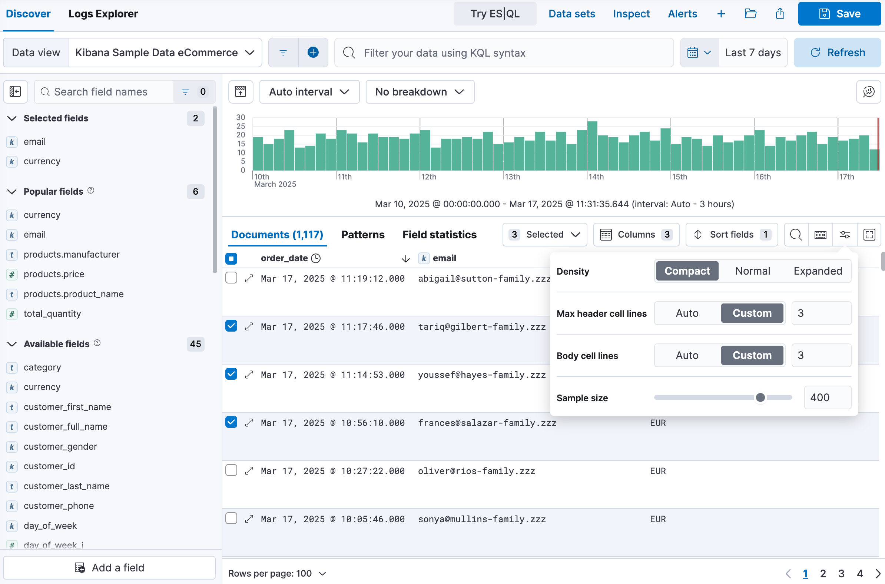
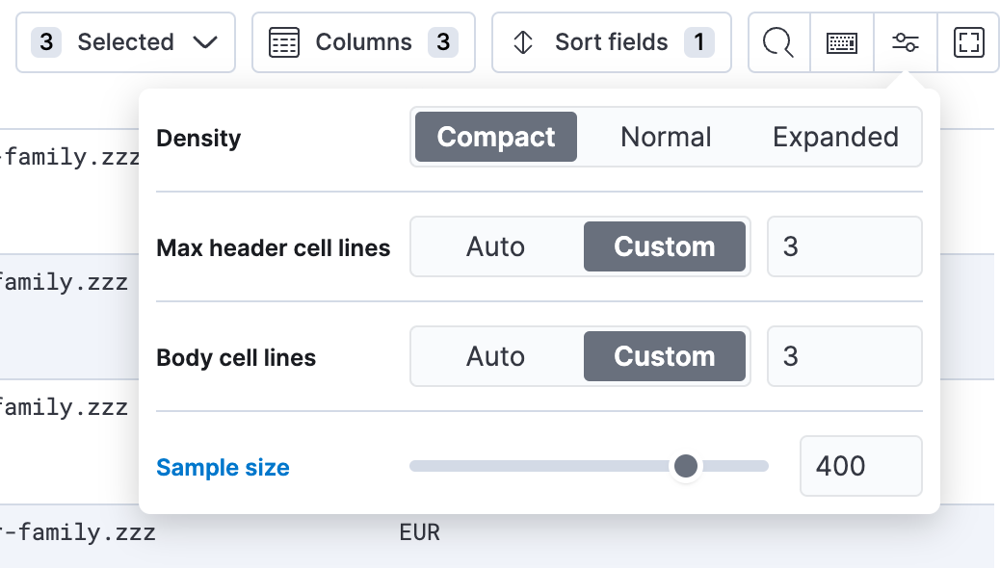

Customize the Discover view
editCustomize the Discover view
editFine tune your explorations by customizing Discover to bring out the the best view of your documents.
Hide or resize areas
edit- You can hide and show the chart and the fields list using the available collapse and expand button in the corresponding area.
- Adjust the width and height of each area by dragging their border to the size you want. The size of each area is saved in your browser for the next time you open Discover.
Modify the document table
editCustomize the appearance of the document table and its contents to your liking.

Reorder and resize the columns
edit- To move a single column, drag its header and drop it to the position you want. You can also open the column’s contextual options, and select Move left or Move right in the available options.
- To move multiple columns, click Columns. In the pop-up, drag the column names to their new order.
-
To resize a column, drag the right edge of the column header until the column is the width that you want.
Column widths are stored with a Discover session. When you add a Discover session as a dashboard panel, it appears the same as in Discover.
Customize the table density
editYou can adjust the density of the table from the Display options located in the table toolbar. This can be particularly useful when scrolling through many results.
Adjust the row height
editTo set the row height to one or more lines, or automatically adjust the height to fit the contents, open the Display options in the table toolbar, and adjust it as you need.
You can define different settings for the header row and body rows.
Limit the sample size
editWhen the number of results returned by your search query (displayed at the top of the Documents or Results tab) is greater than the value of discover:sampleSize, the number of results displayed in the table is limited to the configured value by default. You can adjust the initial sample size for searches to any number between 10 and discover:sampleSize from the Display options located in the table toolbar.
On the last page of the table, a message indicates that you’ve reached the end of the loaded search results. From that message, you can choose to load more results to continue exploring.

Sort the fields
editSort the data by one or more fields, in ascending or descending order. The default sort is based on the time field, from new to old.
To add or remove a sort on a single field, click the column header, and then select the sort order.
To sort by multiple fields:
-
Click the Sort fields option.

-
To add fields to the sort, select their names from the dropdown menu.
By default, columns are sorted in the order they are added.

- To change the sort order, select a field in the pop-up, and then drag it to the new location.
Edit a field
editChange how Kibana displays a field.
- Click the column header for the field, and then select Edit data view field.
-
In the Edit field form, change the field name and format.
For detailed information on formatting options, refer to Format data fields.
Filter the documents
editNarrow your results to a subset of documents so you’re comparing just the data of interest.
- Select the documents you want to compare.
-
Click the Selected option, and then select Show selected documents only.

You can also compare individual field values using the Compare selected option.
Set the number of results per page
editTo change the numbers of results you want to display on each page, use the Rows per page menu. The default is 100 results per page.